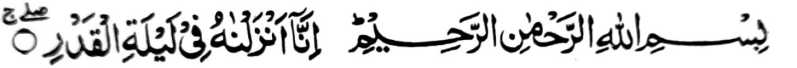
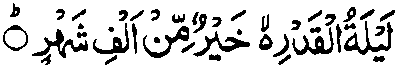
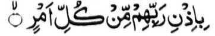

PINTO - II
SO LAYLATUL QADR - Gagawi-i a Bager
Ped ko manga kagagawi-i ko Ramadhan na aden a isa on a bebethowan sa Lailatul Qadr, satiman a kagagawi-i a miyatindos ko kala iyan-i balas. So Qur’an Al-Karim na iniropa niyan so kapiya niyan ago kalbihan niyan sa tomo a di so sanggibo a olan-olan, a giyoto mambo-i kiyabaloy niyan a taralebi a di so walo polo ago telo ragon a go pat olan. Tanto a miyagontong so tao a miyakowa niyan so tarotop a balas angka-iya a kagagawi-i misabap sa kiyanggalebek iyan ko soled iyan [a kagagawi-i] sa manga simba ko Allah (Subhaanaho Wa Ta’ala), sabap sa kiyatimbangan niyan so balas a ‘Ibadaat’ [simba] ko walo polo ago telo ragon ago pat olan ago taralebi ron pen. Mata-an (a so kinibegan) sangka-iya a kagagawi-i ko manga barasimba a Muslim na tanto a mala a limo.
SO PAKAPO-ON
Makapantag sangka-iya a kagagawi-i, na si-i ko Hadith a miyapanothol o Anas (Radhiallaho ‘Anho) [a madadalem] ko [kitab a] Durre Manthur, na so Rasulollah (Sallallaho Alaihi Wasallam) na miyapanothol a miyatharo iyan, “So Lailatul Qadr na inibegay sangka-iya Ummat [aken] go da began ko apiya antawa-a ummat ko miya-onaan niyan.” Makapantag ko sabap a kinibegan ko Lailatul Qadr, na mbaram-barang a kepit a minibegay. Miya-aloy ko saba-ad a manga Hadith, na aya isa a sabap na: Lalayon pephamimikiranen o Rasulollah (Sallallaho ‘Alaihi Wasallam) so kalendo a ‘omor o miyanga-oona pagetao na pekhi-abay niyan ko tanto a mababa a ‘omor o manga Ummat iyan, na gi-i kharata a ginawa niyan, sabap sa opama ka baden pakiphagasiga so manga Ummat iyan ko manga pagetao a miya-onaan niran, na so makampet a omor iran na maregen o ba iran malagid aya pen o ba iran kalampasi so pimbarang a Ummat ko kanggalebek sa Amaal a manga pipiya Giyoto-i sabap a pho-on sa Kala-i Limo o Allah (Subhaanaho Wa Ta’ala) na inibegay Niyan kiran angka-iya kagagawi-i a mala-i balas. Aya ma-ana ini, na o aden a miyagontong sangka-iya Ummat a tao a si-i ko kaoya-goyag iyan na makara-ot sa sapolo bo a kadakel iyan a lagid anan a kagagawi-i na so balas a khakowa niyan na kiyatimbangan niyan so [balas o] simba ko miyakawalo-gatos ago telo polo ago telo ragon ago kalalawanan niyan pen. Ika dowa tothol na miyaka-isa na so Rasulollah (Sallallaho ‘Alaihi Wasallam) na piyanothol iyan ko manga Sahabah so totholan ko sakatao a barasimba ko Bani Isra’il, a miyakasanggibo olan na gi-i pherang (Jihad). So kiyatokawi ran si-i, na so manga Sahabah na tanto a miyasigi sa miyagedam iran a di ran khatimbang angkoto a balas, sabap ro-o na so Allah (Subhaanaho Wa Ta’ala) na inibegay Niyan kiran angka-iya Kagagawi-i (a Bager). Aden pen a salakao a tothol a miyanggola-ola a so Nabi (Sallallaho ‘Alaihi Wasallam) na miyaka-isa na miya-aloy niyan a pat katao a miyatindos a manga pati-is ko Bani Isra’il, a omani isa kiran na miyasimba niyan so Allah (Subhaanaho Wa Ta’ala) ko soled o miyaka-walo polo ragon, sa miyasimba iran Sekaniyan go da den a minisopak iran Non a maito bo. Siran so Nabi Ayyub (‘Alaihis Salaam), so Nabi Zakariyyah (‘Alaihis Salaam), so Nabi Hezkeel (‘Alaihis Salaam), go so Nabi Yu’shaa (‘Alaihis Salaam). Miyaneg oto o manga Sahabah na miyamemesa siran o anda manaya-i kakhalawani ran ko miyapagamal iran.' Oriyan noto na so Jibra’il (‘Alaihis Salaam) na miyakatoron na biyatiya iyan so Surah Al Qadr, a ron miyarinayag so kalbihan angka-iya Kagagawi-i.
Madakel a salakao a tothol a miyapanothol mambo, a inosay niyan so pakapo-on angka-iya Kagagawi-i a Bager. Apiya anda kiran [a manga tothol]-i tharima-an tano, na aya mata-an na so Allah (Subhaanaho Wa Ta’ala) na inibegay Niyan reketano angka-iya Kagagawi-i, a mala a limo, go tanto a miyagontong so siran a manga barasimba a da iran den malepas so simba sangka-iya a kagagawi-i. Makapantag peman ko antona-a kagagawi-i a ron mipapantag na mararani sapolo ago lima a mbaram-barang a pamikiran a miyapanothol. Kena ba malebod raken a kiperirain aken non langon, ogaid na so manga babager ron a manga katharo o manga Ulama na pagalowin ko makatotondog a manga lekatan sangka-iya pinto. Sabap sa so Qur'an Majid na aya den miyaloy sangka-iya a Kagagawi-i, na si-i tano mepho-on ko mababa a tapsir o Surah Al-Qadr

‘Sa Ingaran o Allah (Subhaanaho Wa Ta’ala) a Lebi a Makalimo-on, Lebi a Masalinggagao. Mata-an! A initoron Nami sekaniyan [a Qur'an] ka Gagawi-i a Bager." [Surah Al-Qadr: 1]
Aya mitotoro si-i na so kamamata-ani ron sa si-i sangka-iya a mapepento a kagagawi-i na initoron so Qur’an pho-on ko “Lauhul Mahfoz” [Sisiyapen a Ondang-ondang] na initepad ko paganay a langit [a matatampar] sa donya. So bo so katawi ron sa so Qur’an na initoron sangka-iya a kagagawi-i na kiyatangka-an den noto a katangked o kasesela-a on. Ogaid na salakao pen sangka-i, na madakel pen a sabap a kababaloy niyan a miyatindos. Si-i ko makatotondog a Ayaat na aden a paka-iza a ini-iza ka aden makala so babaya tano sangkanan a bandingan:
"Na antawa-ai miyakanda-o reka o antona-a so Gagawi-i a Bager [a sesela-an]? [Surah Al-Qadr.2]
Aya ma-ana niyan, na aya inipaka-iza si-i na : Ba aden a katawi ngka ko anda taman-i kala ago kipantag angka-iya a kagagawi-i? Ba aden a katawi ngka ko kala-a limo ago manga kalbihan a miperarakhes iyan? So miyakatondog a Ayaat na initaros iyan a kiyaosaya niyan ko kala iyan:

‘So Gagawi-i a Bager [a Sesela-an] na tomo a di so sanggibo a olan-olan." [Surah Al-Qadr: 3]
Aya titho a ma-ana ini na so balas ko kanggalebek sa simba sangka-iya kagagawi-i na tomo ago taralebi a di so kanggalebek sa simba ko soled o sanggibo a olan-olan, ogaid na so peman so tamana o kala iyan-i kipantag na da reketano si-i matharo.
''Petharon ro-o so manga Mala-ikat, a go so Ruh, sabap sa idin o Kadenan niran, makapantag ko omani sogo-an...” [Surah Al-Qadr:4-5]
Aden a mapiya a osayan sangka-iya a Ayaat a inibegay o Imaam Raazi (Rahmatullahi ‘Alaihi). Si-i ko kaphagosaya niyan sangka-iya a Ayaat, na pitharo iyan a so den so kiyatago o manosiya sangka-iya donya, na so manga Mala-ikat na tanto iran a pizima. Kiyarawan niran pen miza ko Allah (Subhaanaho Wa Ta’ala): “...Ino Ka on pagemba-al sa tao a phaminasa-on go phamakaragi-rai ron ko manga rogo?...” [Surah Al-Baqarah:30]
Sakamaoto mambo, a kagiya mailay o mbala a lokes iyan [a manosiya] so paka-asal iyan a sathak a rogo a mapoti, na da iran mambo kababaya-i, taman sa, inibetad iran baden sa nganin a phakaboring ko nditaren sa taralebi so kaonaba-on. Ogaid na si-i ko oriyan o masa a balowin o Allah (Subhaanaho Wa Ta'ala) angkoto a sathak a rogo a sakatao a maito a wata na kiyababaya-an niran sekaniyan ago siniyap iran. Tanto a mala a kiyasalin o betad sa si-i ko masa a Gagawi-i a Bager na so manosiya na sinimba niyan so Allah (Subhaanaho Wa Ta’ala) go pizo-asoat iyan, na siran nolo a manga Mala-ikat na tomoron siran non, a mararani a imbawi iran ko mababa a pamikiran niran a minitakay ran non ko miya-ona. Si-i sangka-iya a Ayaat, a miya-aloy ron pen a so “War Ruh” [go so Ruh], na aya mitotoro iyan na so Jibra’il (‘Alaihis Salaam) a pethoron sa donya sangka-iya a kagagawi-i. So manga pananapsir ko Qur'an na mbaram-barang a inipema-ana iran sangka-iya a katharo Ilain tano so saba-ad kiran:
a. Kadakelan ko manga pananapsir na miyagayon-ayon siran sa aya mitotoro si-i [sangka-iya Ayaat] na so Jibra’il (‘Alaihis Salaam), go so Imaam Raazi (Rahmatullahi ‘Alaihi) na pitharo iyan a giya-i titho a ma-ana niyan. So Allah (Subhaanaho Wa Ta'ala) na aya Niyan paganay maloy so manga Mala-ikat na go Niyan non bo tondogen so Jibra’il ('Alaihis Salaam) sabap ko katitindos iyan kiran.
b. Aden peman a manga pananapsir a aya pamikiran niran non na so Ruh (Niyawa) na aya mitotoro niyan na isa a miyasalebo a Mala-ikat a tanto a mala sa so manga langit ago so lopa na sasagamak iyan.
d. Saba-ad pen a manga pananapsir a aya paratiyaya iran non na so “Ruh'' na salakao a ka-aden o Allah (Subhaanaho Wa Ta’ala) a kena ba manosiya ago kena ba Mala-ikat, ogaid na pekhan ago phaginom.
e. Saba-ad peman a aya kepit iran non na so “Ruh” na aya mitotoro iyan na so Nabi 'Isa (“Alaihis Salaam) a igira sangka-iya a kagagawi-i na pethoron ka phagilain niyan so manga simba angka-iya Ummat.
f. Aya mori a tapsir a pagalowin tano si-i na so “Ruh” na titibaba-an a limo o Allah (Subhaanaho Wa Ta’ala), a pephakatalingoma ko kapethoron o manga Mala-ikat.
Madakel pen a manga tapsir, ogaid na lagid o paganay a inaloy tano, a giyangkanan a paganay a miya-aloy a tapsir na aya tanto a mabager a kepit. Sabap si-i na so Imaam Baihaqi (Rahmatullahi ‘Alaihi) na piyanothol iyan a Hadith a miyakathitayan ko Anas (Radhiallaho ‘Anho) a so Rasulollah (Sallallaho ‘Alaihi Wasallam) na miyapanothol a miyatharo iyan: “Si-i ko Laylatul Qadr, na so Jibra’il (‘Alaihis Salaam) na pethoron a ped iyan so sagorompong a manga Mala-ikat na ipephamangeni ran sa limo so langowan a tao a ma-ilay ran a gi-i nggalebek sa simba.”

"Sabap sa idin o Kadenan niran makapantag ko omani sogo-an." [Surah Al-Qadr:5]
So mizorat ko Mazaahire Haq na pitharo iyan a si-i sangka-iya a gagawi-i, ko miya-ona a masa, na inaden so manga Mala’ikat, ko miyathay pen a da ka-aden o Aadam ( Alaihis Salaam) pho-on ko bontal a salakao; si-i lagida-i a kagagawi-i na so Sorga na piyamola-an sa manga pamomola-an, go madakel a Hadith a mizakesi sa so manga pangeni sangka-iya a kagagawi-i na tatarima-an. Lagidoto mambo a miyabatiya tano ko [kitab a] Durre Manthur, na pitharo ko satiman a Hadith a si-i sangka-iya a kagagawi-i na so Nabi Isa (‘Alaihis Salaam) na inangkat so lawas iyan [sa lopa na inowit] ko manga Langit, go si-i sangka-iya a kagagawi-i na so Taubat o Bani Isra’il na tiyarima.
''Kalilintad sekaniyan taman ko kasebang o Fajr" [Surah Al-Qadr:6]
Mata-an a giyangka-iya a kagagawi-i na aya piyaniyaropa-an o kalilintad si-i ko tenday o kalendo niyan, so manga Mala-ikat na pezalamen niran so Miyamaratiyaya a pezimba-an niran so Kadenan niran. Anda den-i kana-ik o sagorompong [a manga Mala-ikat ko langit] na kasambi-an peman sa sagorompong a tomoron [a lagidoto a pezalam], sa lagid o kiya-aloy niyan ko saba-ad a tothol. Aden pen a salakao a tapsir a giya-i so kagagawi-i a tarotop so kapakalidas ko langowan o marata ago so kabinasa-an. Giyangka-iya a limo na aya kakhapos iyan na taman ko kasebang o Fajr, sa kena ba si-i bo [matatago angkanan a limo] ko mapepento a saba-ad angkoto a kagagawi-i. Imanto na kagiya kiyatokawan tano so saba-ad a kalbihan angka-iya a kagagawi-i a miya-osay ko manga Katharo o Allah (Subhaanaho Wa Ta’ala), na si-i tano peman tomogalin ko manga Hadith a miyabatiya tano a makapantag ko kalbihan angkanan a kagagawi-i.